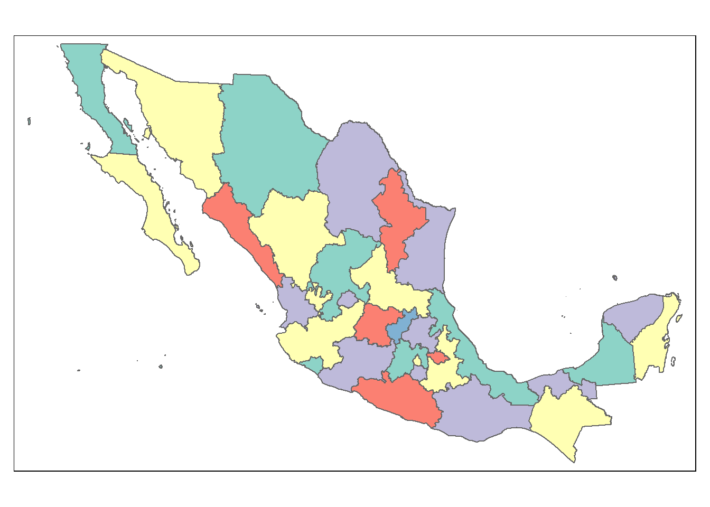

Capítulo 2 Importación de datos cartográficos
- **Marco Geoestadístico
El Marco Geoestadístico es un sistema único y de carácter nacional diseñado por el INEGI, el cual presenta la división del territorio nacional en diferentes niveles de desagregación para referir geográficamente la información estadística de los censos y encuestas institucionales y de las Unidades del Estado, que se integra al Sistema Nacional de Información Estadística y Geográfica (SNIEG).
https://inegi.org.mx/temas/mg/#Descargas
Contenido
Mapa con las coordenadas estatles. Marco Geoestadístico, septiembre 2019 2019 3.11 GB https://inegi.org.mx/contenidos/productos//prod_serv/contenidos/espanol/bvinegi/productos/geografia/marcogeo/889463776079_s.zip
Ficha de información.
https://inegi.org.mx/app/biblioteca/ficha.html?upc=889463776079
Los nombres de archivos se conforman con las claves 00 y la capa con sufijos descriptivos del contenido del archivo: Donde: * 00ent Polígonos de Áreas Geoestadísticas Estatales * 00mun Polígonos de Áreas Municipales * 00a Polígonos de Áreas Geoestadísticas Básicas Urbanas y Rurales * 00l Polígonos de Localidades Urbanas y Rurales amanzanadas * 00lpr Puntos de Localidades Rurales amanzanadas y no amanzanadas
Marco Geoestadístico. Censo de Población y Vivienda 2020 2020 2.65 GB https://inegi.org.mx/contenidos/productos//prod_serv/contenidos/espanol/bvinegi/productos/geografia/marcogeo/889463807469_s.zip
2.0.1 Cambio de acceso estatal en:
https://www.inegi.org.mx/programas/ccpv/2020/default.html#Datos_abiertos
Ficha de información https://inegi.org.mx/app/biblioteca/ficha.html?upc=889463807469
Se descarga y se descomprime localmente Se crea una carpeta para los datos geográficos
#La ruta para el mapa de México se toma del Marcogeostadístico nacional
rutam<-"D:/Documents/Claudia/Midropbox/Investigacion y escritos/Marcogeoestadisticonacional/mg_sep2019_integrado/conjunto_de_datos"
basemapan <- readOGR(rutam,"00ent", use_iconv = TRUE, encoding = "latin1")## OGR data source with driver: ESRI Shapefile
## Source: "D:\Documents\Claudia\Midropbox\Investigacion y escritos\Marcogeoestadisticonacional\mg_sep2019_integrado\conjunto_de_datos", layer: "00ent"
## with 32 features
## It has 3 fieldstm_shape(basemapan) +
tm_polygons(col = "MAP_COLORS",
minimize = TRUE)
#La ruta para el archivo que tiene las variables censales y su descripción
rutvar<-"D:/Documents/Claudia/Midropbox/Investigacion y escritos"
variablescensales<-read.csv(paste0(rutvar,"/Censo2020/","variablescensales.csv"),header=TRUE, sep=",",encoding="UTF-8")